# Introduction to Neural Networks and TensorFlow using Python and Keras # <center><img src="keras-logo-2018-large-1200.png" width="300" /></center> <center></center> <br> <br> <br> <br> dev://east 2019 - Ed Bullen, Company85 --- ## About Me ## #### Work #### Head of Data Engineering and Data Science at **Company85** <img src="company85_V3.png" width="550" /> #### Home Life #### + Married with two children - both children learning Python! + Keen fencer (once competed for GB ... a long time ago) <!-- <img style="float: left;" src="fencers_sml.jpg"> --> <br> <br> <!-- <table> <tr> <td> </td> <td align="left"> <img style="float: left;" src="twitter_sml.png" width="25"> @bullened </td> </tr> <tr> <td> </td> <td align="left"> https://www.linkedin.com/in/edbullen/</td> </tr> </table> --> --- ## Examples of Applications of Neural Networks and Deep Learning## .left-column50[ #### Healthcare - *Image Classification* #### <center></center> #### Helpdesk and Operations Automation - *NLP* #### <center><img src="chatbot_ai.png" width="250" /></center> ] .right-column50[ #### Legal and Recruiting - *Document Classification* ##### <center>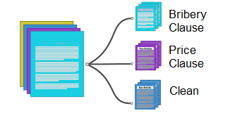</center> #### Finance and Risk - *Regression Analysis* ##### <center>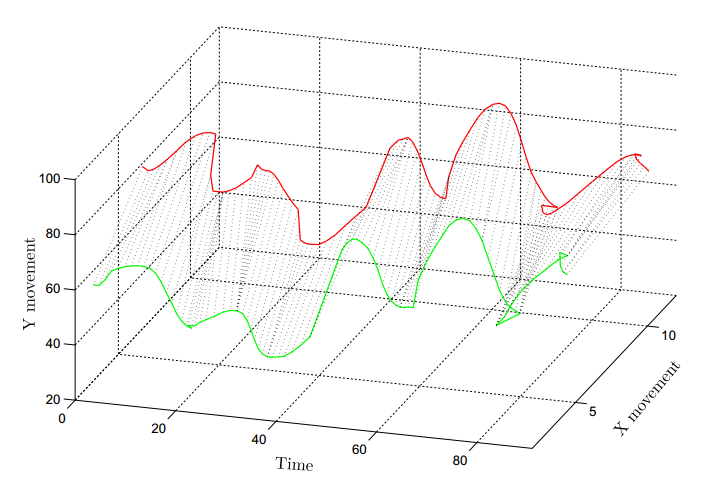</center> ] --- exclude: true ## A Brief History of Neural Networks ## <center>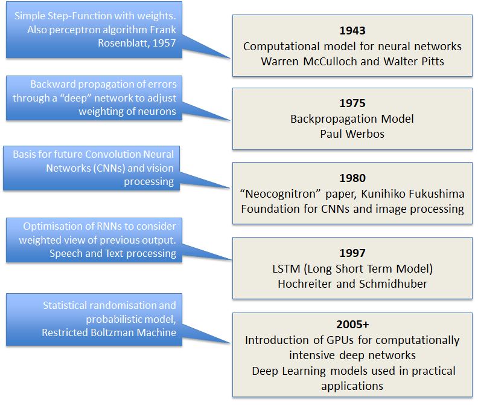</center> --- exclude: true ## Neural Networks vs Other Machine Learning Algorithms ## .left-column70[ https://www.cs.cornell.edu/~caruana/ctp/ct.papers/caruana.icml06.pdf Comparision of + Linear Regression + Naive Bayes + Random Forest + Bagged and Boosted Trees + SVMs + Neural Nets ##### Conclusion #### + In none of the categories do Neural Nets outperform all other methods + Neural Nets perform very well for most use-cases with little calibration. <br><br> Paper written in 2006: Huge amount of development in the field since then. + *Neural Nets best suited to complex multi-dimension problems.* ] .right-column30[ <br> <br> Kurt Hornik 1991: "*Universal approximation theorem states that a feed-forward network with a single hidden layer ... can approximate continuous functions on compact subsets ...under mild assumptions on the activation function.* *... it does not touch upon the algorithmic learnability of those parameters.*" ] --- ## Keras and TensorFlow ## .left-column50[ <center>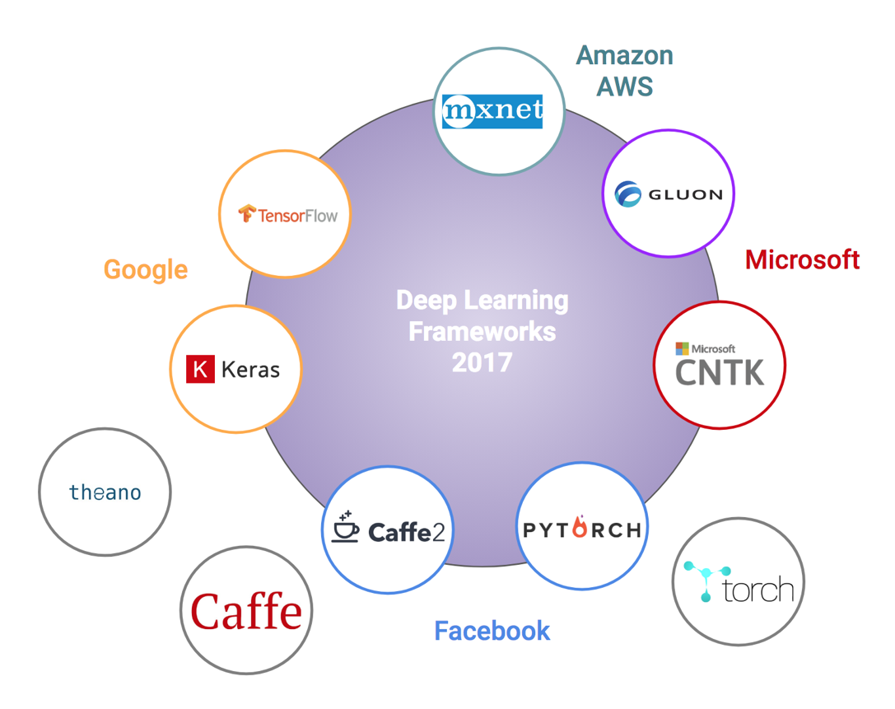</center> ] .right-column50[ <center>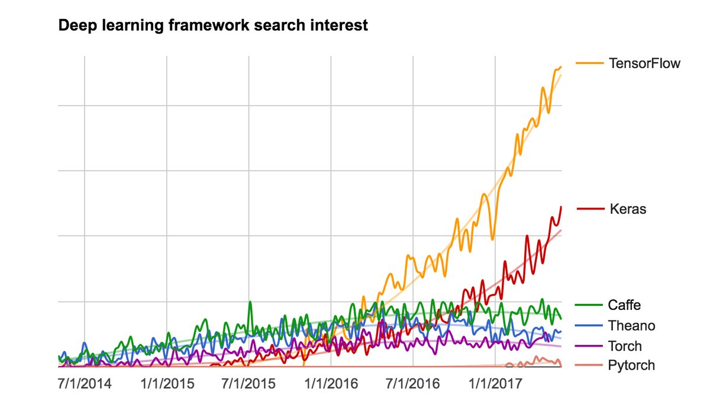</center> **Keras** - "high-level building blocks for developing deep learning models" - API for TensorFlow (default), CNTK, Theano **TensorFlow** - "symbolic math library used for machine learning applications such as neural networks" - Version 1.0.0 released by Google in February 2017 ] --- ## What is an *Artificial* Neural Network? ## .left-column70[ "*Framework for many different machine learning algorithms to work together and process complex data inputs*" (DeepAI.org) - **Perceptron** - Simple logic-gate; apply weighted inputs to determine output - **Neuron** - Smoothed step function (sigmoid) allows graduated weight adjust - **ANN** (Artificial Neural Network) - Combine Neurons into a Feed-Forward Network. - MLP (Multilayer Perceptron ... usually not a "Perceptron" network) - **Deep Learning** - Hidden layers of Neurons - Requires more sophisticated algorithms to train ] .right-column30[ 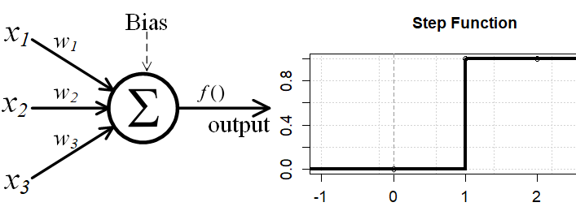 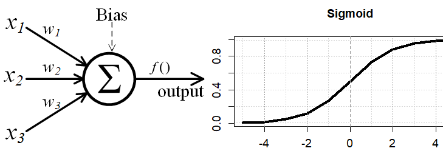 <center>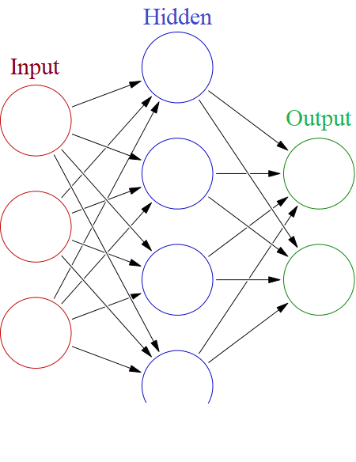</center> ] --- ## Concepts - Cost, Loss and Convergence ## .left-column70[ - **Activation Function** - *relu*, *sigmoid*, *tanh*, *softmax* - **Loss Function** - AKA the Cost Function; difference between expected and actual. - *mean_squared_error*, *categorical_crossentropy*, *binary_crossentropy* - **Backpropagation** - Propagation errors back into model to use to adjust weights. - **Gradient Descent** - Algorithm to determine how to reduce the loss / cost. - **Learning Rate** - Rate that adjustments are made to reduce the cost. - **Optimisation** - Method for determing how to descend the gradient and Converge on an optimal model - First-Order, Second-Order, Stochastic, "Adam" (c. 2015) - *"Empirical results demonstrate that Adam works well in practice and compares favorably to other stochastic optimization methods." * ] .right-column30[ <center>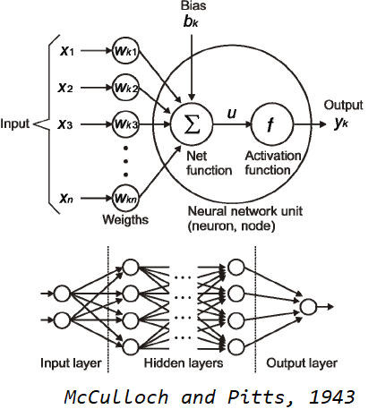</center> <br> <center>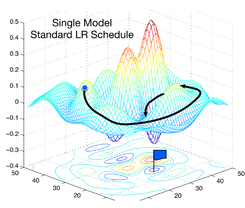 </center> <sub>credit: https://arxiv.org/abs/1704.00109</sub> ] --- ## Activation Functions ## <center>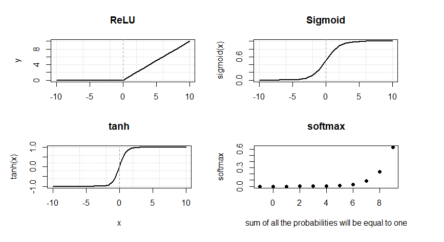 </center> #### Example - Binary Classification #### - *relu* inputs - *relu* hidden layer - *sigmoid* output - *binary_crossentropy* loss function (or *categorical_crossentropy* for multiple categories). --- ## More Concepts and Terms ## ### Hyper-parameters for building a model ### - **Layers** and **Nodes** - Build layers out of Nodes and pass outputs to the next layer - **Sequential** vs **Functional** API - Generally use Sequential for basic models; Functional API allows creation of complex network topology - **Dense** vs **Dropout** vs **Flatten** Layers - Densely connected standard layer vs layer for "Regularisation" to avoid overfitting vs reshape to 1-D vector - **Epocs** - A training pass through the full data set (vs iterate over a sub-set) - **Batch Size** - Controls the number of "batches" of training data to include in each training pass - **Iterations** - The number of passes to make with "batch-size" training data samples Example from SO: *If you have 1000 training examples, and your batch size is 500, then it will take 2 iterations to complete 1 epoch*. --- ## A Simple Example - Classify Blobs in a 2D Space ## .left-column50[ As simple as it gets, just to learn the Keras mechanisms (you don't really need a neural network for this!). Train a model to decide whether a "blob" is in the Purple class (**0**) or the Yellow class (**1**) <center>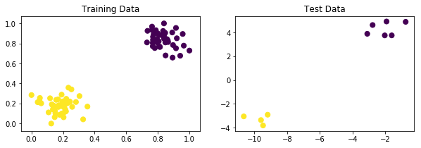 </center> <br><br><br><br> [https://github.com/edbullen/keras/blob/master/keras_blobs_class.ipynb](https://github.com/edbullen/keras/blob/master/keras_blobs_class.ipynb) ] .right_column50[ 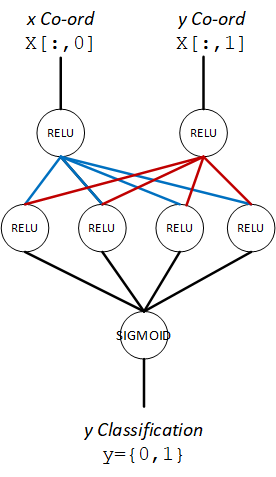 ] --- ## A Simple Example - Classify Blobs in a 2D Space ## .left-column70[ **Import API** ``` Python from keras.models import Sequential from keras.layers import Dense``` **Build** ``` Python model = Sequential() model.add(Dense(2, input_dim=2, activation='relu')) model.add(Dense(4, activation='relu')) model.add(Dense(1, activation='sigmoid')) model.compile(loss='binary_crossentropy', optimizer='adam') ``` **Train** ``` Python model.fit(X_train, y_train, epochs=10, verbose=0) ``` **Predict** ``` Python new_data = np.array([0.1,0.1]).reshape(1,2) print(model.predict_classes(new_data)) [[1]] ``` ] .right-column30[ ] --- ## Image Processing Example ## https://github.com/edbullen/keras/blob/master/keras_digits.ipynb MNIST Digits - classify handwritten digits 0-9 <center>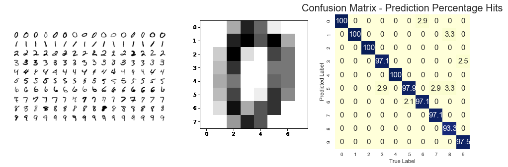 </center> ``` Python model.add(Dense(64, input_dim=64, activation='relu')) # flat 64-D data model.add(Dense(1024, activation='relu')) model.add(Dense(32, activation='relu')) model.add(Dense(10,activation='softmax')) model.compile(loss='categorical_crossentropy', optimizer='adam') ``` ``` Accuracy Score: 98.1 percent ``` --- ## Text Analysis With Keras ## https://github.com/edbullen/keras/blob/master/reuters_text.ipynb Text classification of articles in the Reuters-21578 Collection - *Collection of 21578 articles published on Reuters in 1987, each labled for 90 different categories* Each item in the data-set contains a collection of words from a news article: ``` ['the', 'payable', 'interests', 'services', 'option', 'february', ... 'potato', 'markets', 'storage', 'on', 'pct', 'dlrs' ] ``` Each item gets a classification - i.e. "**jobs**" in the above example. ``` Python from keras.preprocessing.text import Tokenizer tokenizer = Tokenizer(num_words=10000) # create one-hot matrix x_train = tokenizer.sequences_to_matrix(word_list_of_lists, mode='binary') ``` ``` Python model = Sequential() model.add(Dense(1024, input_shape=(num_words,), activation='relu')) ... model.add(Activation('softmax')) # sum of probabilities = 1 model.compile(loss='categorical_crossentropy', optimizer='adam') # backprop algo for categories ``` **Other Techniques** LSTM, Word embeddings, either trained or pre-trained EG Google [Word2Vec]( https://papers.nips.cc/paper/5021-distributed-representations-of-words-and-phrases-and-their-compositionality.pdf) and Stanford [GloVe](https://nlp.stanford.edu/projects/glove/) --- ## Down the Rabbit Hole (More Advanced Methods)## .left-column70[ + CNN (Convolutional Neural Networks) - Dimension reduction and "locality of reference" - EG images + TDNN (Time Delay Neural Networks) - Modeling in a temporal context + LSTM (Long Short Term Memory) - enhancement beyond RNN to model combinations of inter-related past events + GAN (Generative Adversarial Network) - adverserial generation of output with descriminator network scoring + Reinforcement Learning - Learning based on reward feedback (Q table) ] .right-column30[ <center>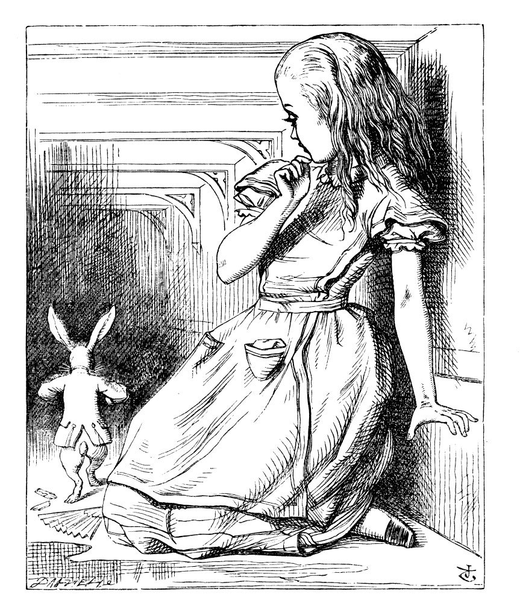 </center> ] <center>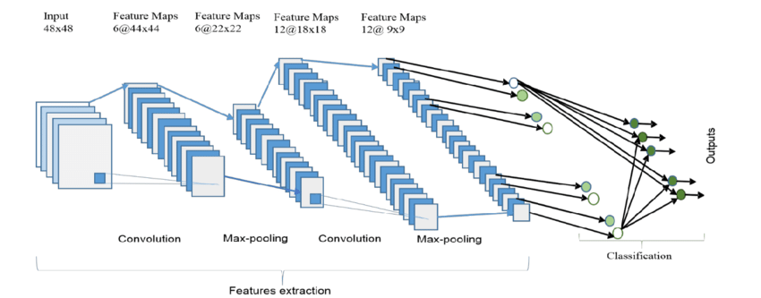 </center> --- ## Scaling Up - Memory, CPU, Monitoring and Persistance ## + Use a Generator, Log progress to file, Save model to h5py ``` Python # Yield batches of 64 def myGenerator() ... while 1: for i in range(2000): yield X_train[i*64:(i+1)*64], y_train[i*64:(i+1)*64] model.add(Dense(img_rows * img_cols, input_dim=1024, activation='relu')) ... csv_logger = CSVLogger(LOG_DIR + "/" + "model_build.log", append=True, separator=';') history=model.fit_generator(myGenerator(), steps_per_epoch = 2000, epochs = 5, callbacks=[csv_logger]) model.save(MODELS_DIR + "/model.h5py") ``` .left-column50[ + Parallel CPU ] .right-column50[ + GPU, TPU <img src="cpu_gpu_tpu.png" width="300" /> ] --- # Thank You # <br> <br> + Keras API - The easist way to develop Deep Learning models with Tensor Flow + Learn by Experimentation, without any complex maths + Its Addictive - a whole new world of possibilities <br> <br> <br> <br> <br> <br> ### Examples ### .left-column40[ <div> <img style="float: left;" src="github.png" width="30"> https://github.com/edbullen/keras </div> ] .right-column40[ <div> <img style="float: left;" src="twitter_sml.png" width="25"> @bullened </div> <div> https://www.linkedin.com/in/edbullen/ </div> ]